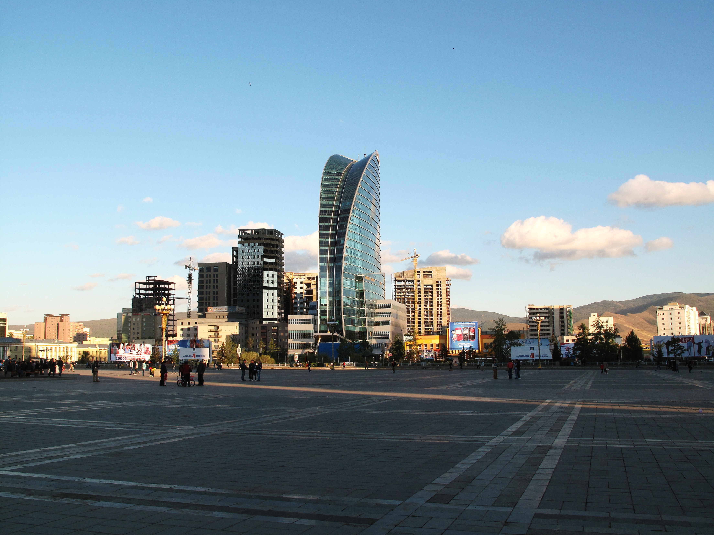
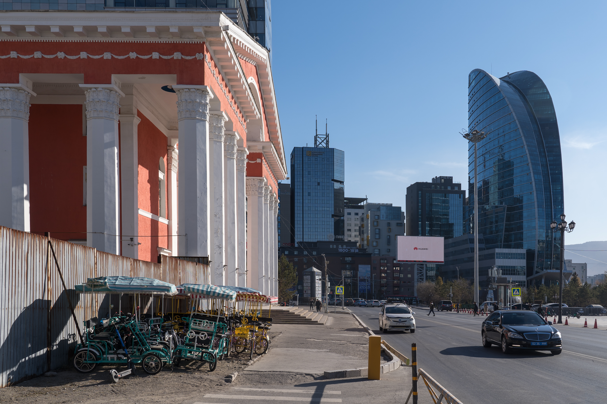
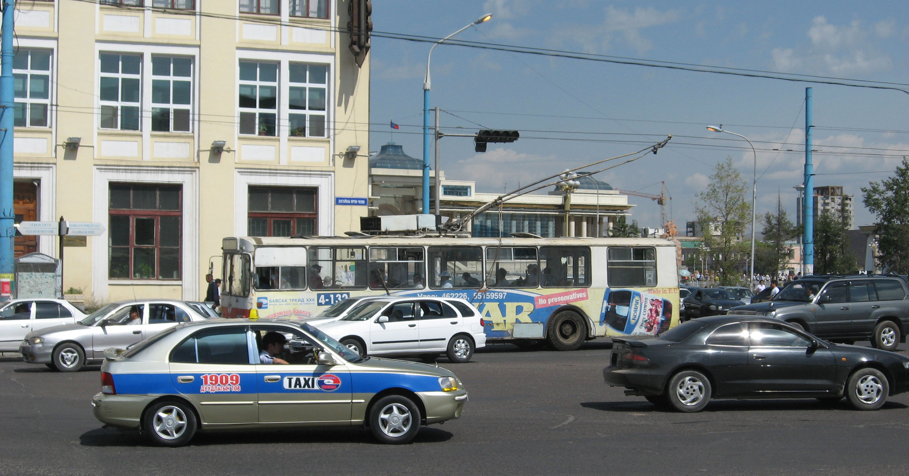

Source: World Bank WDI, Mongolia country code MNG. Indicator IDs: SP.URB.TOTL.IN.ZS, SP.RUR.TOTL.ZS. Unit: Percent of population (%).
The urban-rural share is a proxy for service-delivery geography. As the urban share rises, Ulaanbaatar and secondary cities absorb housing, pollution, transport, and employment pressure, while rural administration must still maintain services for smaller and more dispersed populations.
- Urban population (% of total population) rose from 36.87 in 1960 to 70.96 in 2024.
- Rural population (% of total population) fell from 63.13 in 1960 to 29.04 in 2024.
Source: Mongolia Center for Health Development, Health Indicators 2024; rest of Mongolia computed from reported totals. Indicator IDs: Ulaanbaatar population, national population, households. Unit: Percent of national total.
Ulaanbaatar contains roughly half of Mongolia's population and households. This concentration gives the capital political weight, labor-market depth, and service economies of scale, but it also concentrates housing deficits, air pollution, congestion, school and hospital demand, land disputes, and protest politics. For public administration, the capital is not just one municipality; it is the main pressure point of the national social contract.
Source: Mongolia Center for Health Development, Health Indicators 2024, citing national household statistics. Indicator IDs: spatial-households-2024. Unit: Share of households (%).
The regional household distribution shows the administrative geography behind national averages. Almost half of households are in Ulaanbaatar, while the remaining households are spread across large western, khangai, central, and eastern regions. This makes equal service delivery a spatial-finance problem rather than only a social-policy problem.
Source: World Bank WDI, Mongolia country code MNG. Indicator IDs: SP.POP.GROW, EN.POP.DNST. Unit: Annual percent and people per sq. km.
Population growth and density show why Mongolia's demographic problem is unusual. The population is still growing, but the national density remains extremely low, so the state must finance schools, health posts, local administration, roads, emergency response, and digital access across vast distances.
- Population growth (annual %) fell from 3.19 in 1961 to 1.25 in 2024.
- Population density (people per sq. km of land area) rose from 0.65 in 1961 to 2.23 in 2023.

Ulaanbaatar skyline, 2012
Ulaanbaatar cityscape, 2024